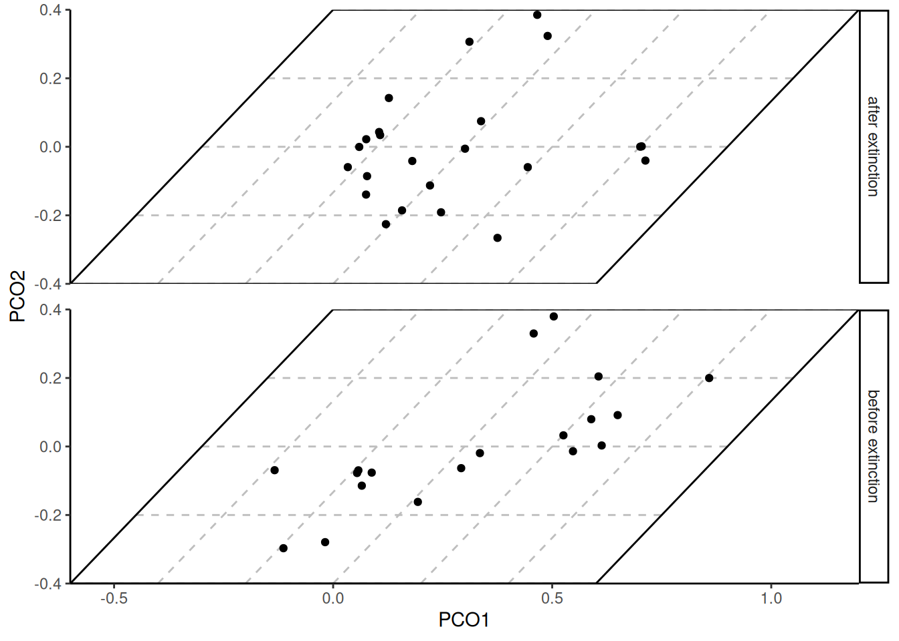

Many packages exist to visualize trait data for biological species. deeptime similarly has a few novel ways to help you plot your data in useful ways. We’ll first load some packages and example data so we can demonstrate some of this functionality.
# Load deeptime
library(deeptime)
# Load other packages
library(ggplot2)
library(dplyr)
# Load dispRity for example data
library(dispRity)
data(demo_data)
# Load paleotree for example data
library(phytools)
data(mammal.tree)
data(mammal.data)Plot disparity through time
A common way to visualize trait data, especially for fossil species,
is to show the two-dimensional trait distribution for several time
intervals. This allows the viewer to easily compare the trait
distribution through time. However, producing such a plot has
historically been very time intensive, often involving the use of custom
code and image editing software (e.g., Inkscape). While a single function to
accomplish such a visualization still does not exist for
ggplot2 (yet…), the coord_trans_xy()
function can be used to generate a similar plot with sheared trait space
across several time intervals.
# make transformer
library(ggforce)
trans <- linear_trans(shear(.75, 0))
# prepare data to be plotted
crinoids <- as.data.frame(demo_data$wright$matrix[[1]][, 1:2])
crinoids$time <- "before extinction"
crinoids$time[demo_data$wright$subsets$after$elements] <- "after extinction"
# a box to outline the trait space
square <- data.frame(V1 = c(-.6, -.6, .6, .6), V2 = c(-.4, .4, .4, -.4))
ggplot() +
geom_segment(
data = data.frame(
x = -.6, y = seq(-.4, .4, .2),
xend = .6, yend = seq(-0.4, .4, .2)
),
aes(x = x, y = y, xend = xend, yend = yend),
linetype = "dashed", color = "grey"
) +
geom_segment(
data = data.frame(
x = seq(-.6, .6, .2), y = -.4,
xend = seq(-.6, .6, .2), yend = .4
),
aes(x = x, y = y, xend = xend, yend = yend),
linetype = "dashed", color = "grey"
) +
geom_polygon(data = square, aes(x = V1, y = V2), fill = NA, color = "black") +
geom_point(data = crinoids, aes(x = V1, y = V2), color = "black") +
coord_trans_xy(trans = trans, expand = FALSE) +
labs(x = "PCO1", y = "PCO2") +
theme_classic() +
facet_wrap(~time, ncol = 1, strip.position = "right") +
theme(panel.spacing = unit(1, "lines"), panel.background = element_blank())
Disparity in base R
The disparity_through_time() function accomplishes
nearly all of the work for you if you are comfortable plotting within
the lattice framework (base R). Note that it may take
some tweaking (especially the aspect argument) to get the
results to look the way you want.
crinoids$time <- factor(crinoids$time)
disparity_through_time(time ~ V2 * V1,
data = crinoids, groups = time, aspect = c(1.5, .6),
xlim = c(-.6, .6), ylim = c(-.5, .5),
col.regions = "lightyellow", col.point = c("red", "blue"),
par.settings = list(
axis.line = list(col = "transparent"),
layout.heights =
list(
top.padding = -20, main.key.padding = 0,
key.axis.padding = 0, axis.xlab.padding = 0,
xlab.key.padding = 0, key.sub.padding = 0,
bottom.padding = -20
),
layout.widths =
list(
left.padding = -10, key.ylab.padding = 0,
ylab.axis.padding = 0, axis.key.padding = 0,
right.padding = 0
)
)
)Phylomorphospaces
Often, trait data will be accompanied with a phylogeny. You may want
to visualize both your phylogeny, the traits of your species, and the
evolution of the trait along your phylogeny. To accomplish this, you can
create a two-dimensional phylomorphospace. The phytools
package has the phytools::phylomorphospace() function for
accomplishing this in base R. The geom_phylomorpho()
function in deeptime will help you accomplish this with
ggplot(). Note that labels can be added using
geom_label() or ggrepel::geom_label_repel(),
but they are not demonstrated here because they would obscure the
phylogenetic relationships.
mammal.data$label <- rownames(mammal.data)
ggplot(mammal.data, aes(x = bodyMass, y = homeRange, label = label)) +
geom_phylomorpho(mammal.tree) +
theme_classic()